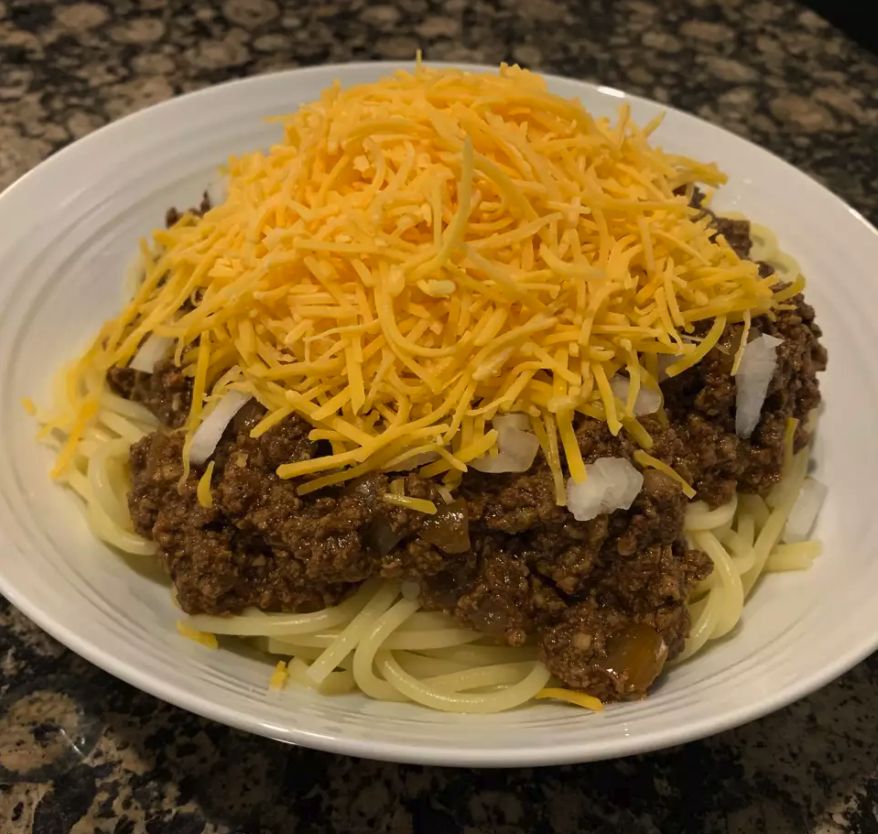

Cincinnati Chili

Description
Cincinnati Chili is a Mediterranean-spiced meat sauce. It consists of ground beef flavored to be savory and sweet. Cincinnati Chili is typically topped with shredded cheese. In our recipe we'll be making spaghetti topped with Cincinnati Chili. You may have seen this food made in various restaurants like Skyline Chili topping various foods including spaghetti and hotdogs.
Ingrediants
- 2 pounds ground beef
- 1 quart water
- 2 onions, finely chopped
- 1 (15 ounce) can of tomato sauce
- 2 tbsp vinegar
- 2 tsp Worcestershire sauce
- 4 cloves garlic, minced
- 1 oz square unsweetened chocolate
- 1/4 cup chili powder
- 1 tsp salt
- 1 tsp ground cumin
- 1 tsp ground cinnamon
- 1/2 tsp ground cayenne pepper
- 5 whole allspice berries
- 1 bary leaf
Steps
- Place the ground beef in a large pan, cover with about 1 quart of cold water, and bring to a boil, stirring and breaking up the beef with a fork to a fine texture. Slowly boil until the meat is thoroughly cooked, about 30 minutes, then remove from heat and refrigerate in the pan overnight.
- The next day, skim the solid fat from the top of the pan, and discard the fat. Place the beef mixture over medium heat, and stir in the onions, tomato sauce, vinegar, Worcestershire sauce, garlic, chocolate, chili powder, salt, cumin, cinnamon, cayenne pepper, cloves, allspice berries, and bay leaf. Bring to a boil, reduce heat to a simmer, and cook, stirring occasionally, for 3 hours. Add water if necessary to prevent the chili from burning.